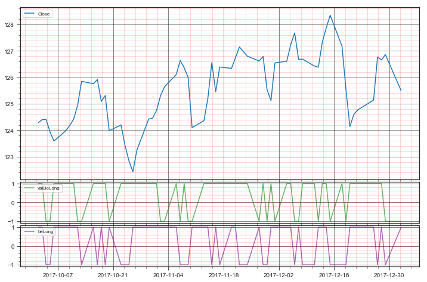

Python 3.6.6 |Anaconda custom (64-bit)| (default, Jun 28 2018, 11:27:44) [MSC v.1900 64 bit (AMD64)]
Type "copyright", "credits" or "license" for more information.
IPython 6.1.0 -- An enhanced Interactive Python.
inSampleMonths: 12
Months to load: 27
Data Load Date: 2015-12-02
In Sample Start Date: 2016-01-02
Out of Sample Start Date: 2017-10-02
Pivot Date: 2018-04-02
====Retrieving dataSet====
====Retrieving model====
Model start: 2017-10-02
Model end: 2018-01-02
There are 64 data points
0.000965561635018 1
0.0001 1
-0.00377783136404 -1
-0.00282394707116 -1
0.00315559511287 1
0.00161316341345 1
0.00193267837011 1
0.00425976531104 1
0.00720288115246 -1
-0.000715137067938 -1
0.00127226463104 1
-0.0065914866582 1
0.00175873371173 1
-0.0106136780784 1
0.0017744797548 -1
-0.00619967793881 1
-0.00478003726809 1
-0.00333767502442 1
0.00661602548395 1
0.00957481337228 1
0.000321491721588 1
0.00233006588462 1
0.00440881763527 1
0.00271348762969 -1
C:/Users/kruegkj/Documents/GitHub/QuantTradingSys/Code/models/oosample_sample_model_loops.py:127: SettingWithCopyWarning:
A value is trying to be set on a copy of a slice from a DataFrame.
Try using .loc[row_indexer,col_indexer] = value instead
See the caveats in the documentation: http://pandas.pydata.org/pandas-docs/stable/indexing.html#indexing-view-versus-copy
valData['valBeLong'] = pd.Series(y_validate, index=valData.index)
C:\ProgramData\Anaconda3\lib\site-packages\matplotlib\cbook\deprecation.py:107: MatplotlibDeprecationWarning: Passing one of 'on', 'true', 'off', 'false' as a boolean is deprecated; use an actual boolean (True/False) instead.
warnings.warn(message, mplDeprecation, stacklevel=1)
C:/Users/kruegkj/Documents/GitHub/QuantTradingSys/Code/models/oosample_sample_model_loops.py:166: SettingWithCopyWarning:
A value is trying to be set on a copy of a slice from a DataFrame.
Try using .loc[row_indexer,col_indexer] = value instead
See the caveats in the documentation: http://pandas.pydata.org/pandas-docs/stable/indexing.html#indexing-view-versus-copy
tradesData['valBeLong'] = pd.Series(y_validate, index=tradesData.index)
C:/Users/kruegkj/Documents/GitHub/QuantTradingSys/Code/models/oosample_sample_model_loops.py:167: SettingWithCopyWarning:
A value is trying to be set on a copy of a slice from a DataFrame.
Try using .loc[row_indexer,col_indexer] = value instead
See the caveats in the documentation: http://pandas.pydata.org/pandas-docs/stable/indexing.html#indexing-view-versus-copy
tradesData['gain'] = tradesData['Close'] - tradesData['Open']
C:/Users/kruegkj/Documents/GitHub/QuantTradingSys/Code/models/oosample_sample_model_loops.py:181: SettingWithCopyWarning:
A value is trying to be set on a copy of a slice from a DataFrame.
Try using .loc[row_indexer,col_indexer] = value instead
See the caveats in the documentation: http://pandas.pydata.org/pandas-docs/stable/indexing.html#indexing-view-versus-copy
valData['equityAllSignals'] = pd.Series(equityAllSignals, index=valData.index)
C:/Users/kruegkj/Documents/GitHub/QuantTradingSys/Code/models/oosample_sample_model_loops.py:191: SettingWithCopyWarning:
A value is trying to be set on a copy of a slice from a DataFrame.
Try using .loc[row_indexer,col_indexer] = value instead
See the caveats in the documentation: http://pandas.pydata.org/pandas-docs/stable/indexing.html#indexing-view-versus-copy
valData['equityBeLongSignals'] = pd.Series(equityBeLongSignals, index=valData.index)
C:/Users/kruegkj/Documents/GitHub/QuantTradingSys/Code/models/oosample_sample_model_loops.py:203: SettingWithCopyWarning:
A value is trying to be set on a copy of a slice from a DataFrame.
Try using .loc[row_indexer,col_indexer] = value instead
See the caveats in the documentation: http://pandas.pydata.org/pandas-docs/stable/indexing.html#indexing-view-versus-copy
valData['equityValBeLongSignals'] = pd.Series(equityValBeLongSignals, index=valData.index)
0.00374084686406 -1
0.00420268019983 1
-0.00221099178774 -1
-0.002849002849 1
-0.0150793650794 -1
0.00209508460919 -1
0.00675458346735 1
0.0108626198083 1
-0.00869152970923 1
0.00741272118604 1
-0.000395600917794 1
0.00316605983853 1
0.00323496922834 1
-0.00275265434526 1
-0.00141955835962 1
0.00134259990523 -1
-0.00985882167363 1
-0.00334554723594 -1
0.011429028133 1
0.00047412090083 -1
0.00497591027565 1
0.00345803206539 1
-0.0078320802005 -1
0.0001 -1
-0.00205225353224 1
-0.000395475757336 1
0.00751701218547 -1
0.00424094871594 1
0.00375381246579 1
-0.00911569925984 -1
-0.0129737380091 1
-0.0110730502669 -1
0.00370549379733 1
0.00136436597111 1
0.00296545643985 1
0.0130254115391 1
-0.000867713181352 1
0.00157903047529 1
-0.0107993063219 -1
Terminal Weatlh: 1.05019285277
End of Run
There are 64 rows of data
TWR for all signals is 1.014
TWR for all days with beLong signals is 1.167

There are 61 data points
-0.000158616860972 -1
-0.0028555564369 -1
-0.000636385331318 -1
-0.0133726020855 -1
-0.00121016538927 -1
0.00411954765751 -1
0.00168932507441 -1
0.00417603597816 1
-0.00135956493922 1
-0.0092896612477 1
-0.00525422358742 1
0.000975134080936 -1
0.00430264653353 -1
-0.0054158920055 -1
0.00820871261378 1
-0.0037081821846 -1
-0.00695849178736 1
-0.00586653629919 -1
0.00590115564298 -1
-0.0165403731769 -1
-0.0092792046396 -1
0.00944974075932 -1
-0.00621323833982 -1
-0.00950316772257 -1
-0.00109409190372 -1
-0.0063189822226 -1
0.00440902153637 -1
0.00447408407901 1
-0.0110933691907 -1
0.00339933712926 -1
0.00542051325485 -1
-0.00438042287929 -1
-0.0122683814197 -1
0.00299811547028 -1
0.00888205653771 -1
0.000338610005926 -1
-0.001438605399 1
0.00635593220339 -1
0.0048 1
-0.00812939993295 -1
-0.00270384452894 1
0.000931966449208 1
-0.00110038936855 -1
0.00576222354038 -1
-0.0065717415115 1
0.00576711050801 -1
0.00505944852011 1
0.0088094638812 -1
0.0001 1
-0.00357618097139 1
-0.0031716885068 1
-0.00401909068073 -1
0.00109289617486 1
0.00990930466913 1
-0.000748378513221 -1
-0.00382791046018 1
0.0106925068917 -1
0.00264484668154 1
0.00486357266507 1
-0.000164068908942 1
Terminal Weatlh: 1.00167706345
End of Run
There are 61 rows of data
TWR for all signals is 0.967
TWR for all days with beLong signals is 1.145
Starting single run
Traceback (most recent call last):
File "<ipython-input-1-620efb47a016>", line 1, in <module>
runfile('C:/Users/kruegkj/Documents/GitHub/QuantTradingSys/Code/models/oosample_sample_model_loops.py', wdir='C:/Users/kruegkj/Documents/GitHub/QuantTradingSys/Code/models')
File "C:\ProgramData\Anaconda3\lib\site-packages\spyder\utils\site\sitecustomize.py", line 710, in runfile
execfile(filename, namespace)
File "C:\ProgramData\Anaconda3\lib\site-packages\spyder\utils\site\sitecustomize.py", line 101, in execfile
exec(compile(f.read(), filename, 'exec'), namespace)
File "C:/Users/kruegkj/Documents/GitHub/QuantTradingSys/Code/models/oosample_sample_model_loops.py", line 276, in <module>
datesPass = dt.date()>=modelStartDate and dt.date()<=modelEndDate
File "pandas\_libs\tslib.pyx", line 1080, in pandas._libs.tslib._Timestamp.__richcmp__ (pandas\_libs\tslib.c:20281)
TypeError: Cannot compare type 'Timestamp' with type 'date'
In [2]:
In [2]:
In [2]: